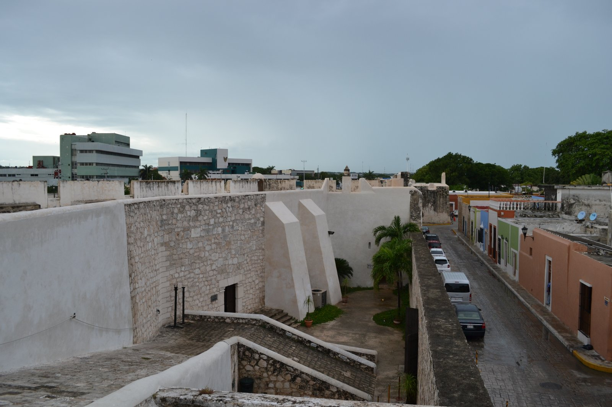
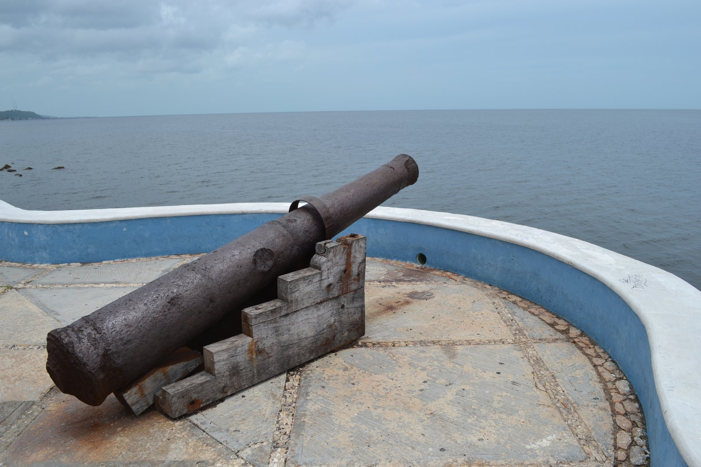
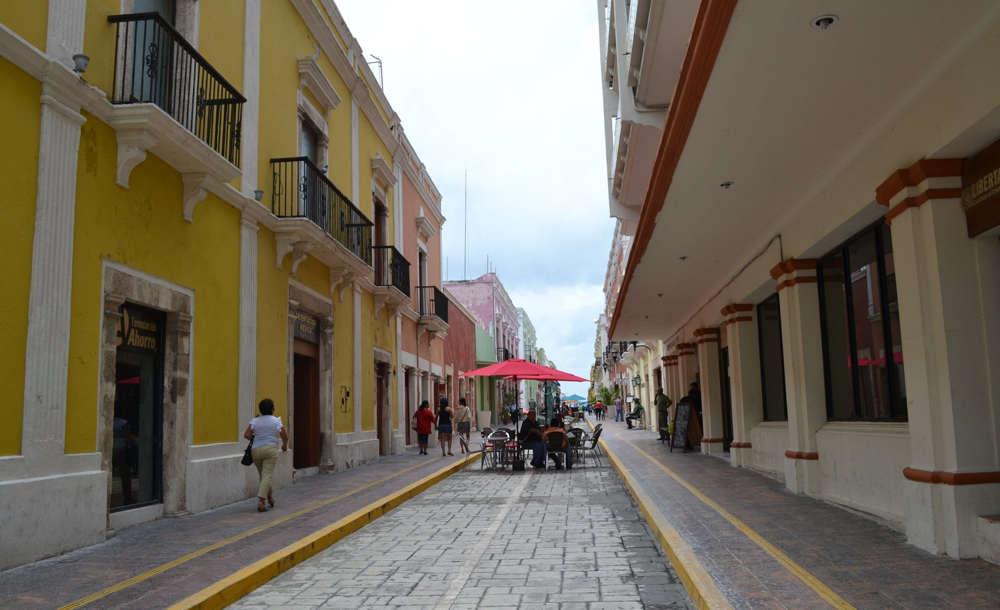
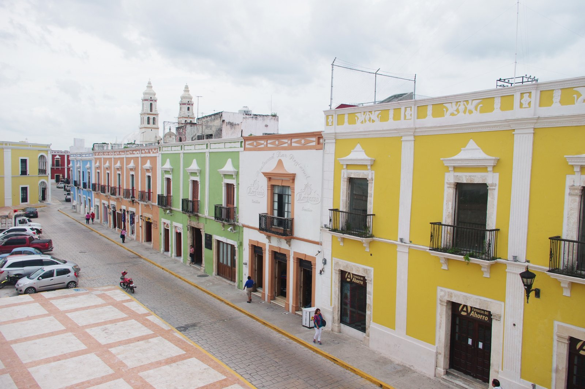
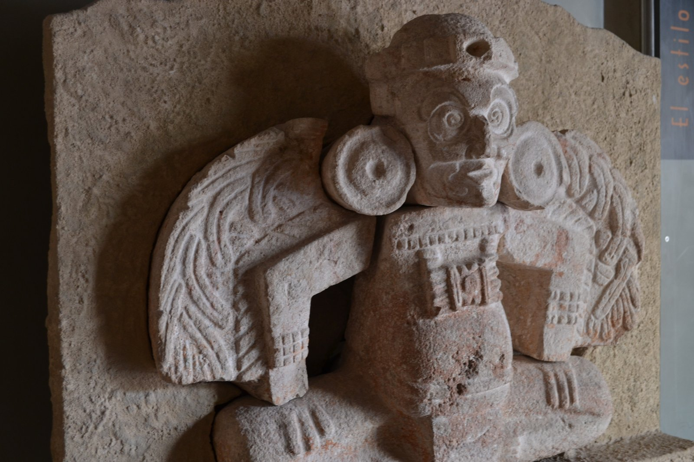
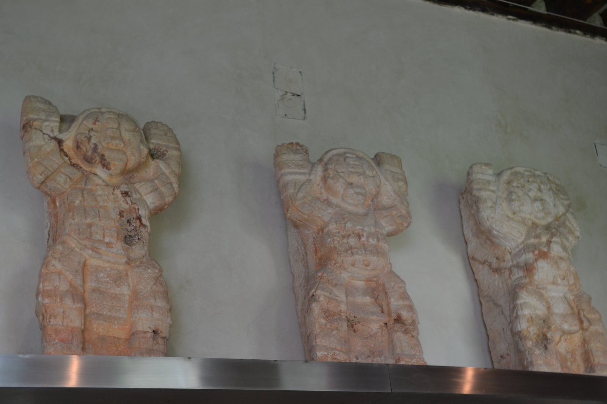
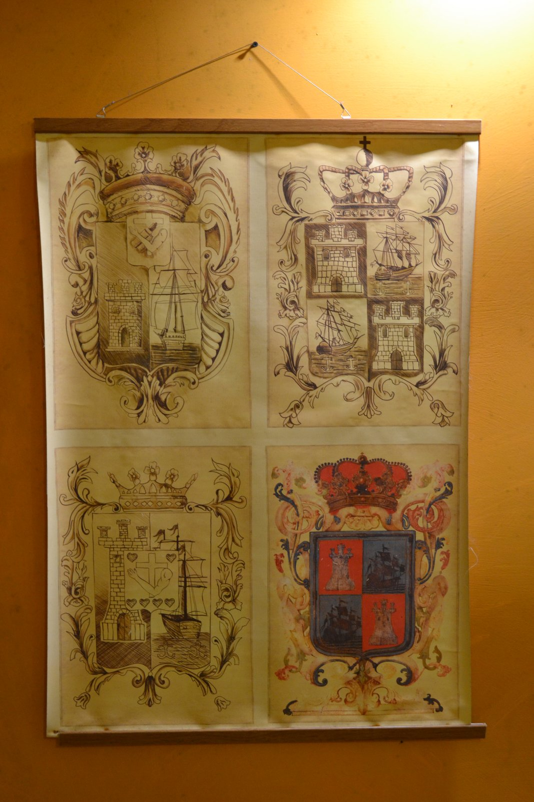
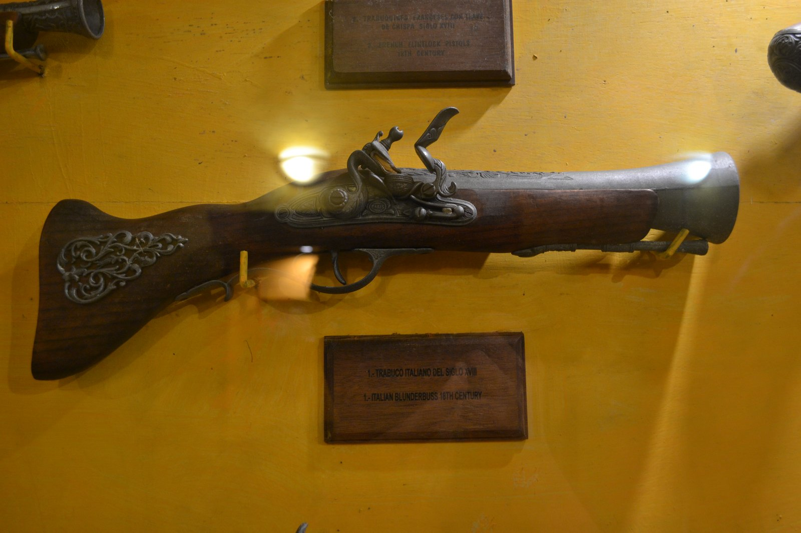

チアパス州のパレンケ遺跡を歩いたあと、ユカタン半島入口の街カンペチェ（Campeche）に立ち寄った。UNESCO 世界遺産（1999年登録）の、城壁に囲まれた植民地時代の要塞都市だ。ADO長距離バスでこの街に到着し、城壁・博物館・コロニアル街路を巡ったあと、次の目的地ウシュマル遺跡へ向かった。
メキシコ湾（より厳密には湾内のカンペチェ湾）に面した港町だが、街そのものは内陸を背に城壁で囲まれた小さな要塞としての作りを今も残している。
海賊と戦った要塞都市
カンペチェが現在のような城壁都市になった理由はシンプルで、16〜17世紀にかけてカリブ海から来る海賊に何度も襲撃されたからだ。フランシスコ・ドレイクの跡を継ぐ英仏の海賊たちは、メキシコの銀やマヤ産物を本国に運ぶスペイン船をカンペチェ沖で襲い、ときに街そのものに上陸して略奪した。記録に残る大規模襲撃だけでも、1597年（William Parker）・1633年（Pie de Palo）・1663年（Henry Morgan の艦隊）・1685年（Laurens de Graaf による占拠）などがあり、特に1685年の襲撃では街がほぼ焼き尽くされた（出典: San Francisco de Campeche）。

こうした繰り返しの被害を受けて、スペイン王室は1686〜1704年にかけて街を完全に取り囲むバルアルテ（角堡）と城壁を建設した。八角形の城壁の総延長は約2.5km、現在も8基のバルアルテが残る（うち2基はほぼ完全な形で保存）。城壁の外側は海と森、内側に教会・市場・住居をすべて収める閉じた要塞都市で、カリブ海から来る攻撃に備えて、海に向かって砲を構える設計だった。

パステルカラーのコロニアル街路
城壁の内側に入ると、雰囲気が一変する。黄色・水色・サーモンピンク・薄緑——パステルカラーで塗り分けられた建物が、碁盤の目状に区切られた街路の両側にずっと続いている。世界遺産登録に向けて街全体で色彩を整えた結果らしいが、押しつけがましさはなく、強い陽射しの下で本当に美しい。


ポジョ・コン・モーレ初体験
街歩きの途中、黄色い建物が並ぶ街路の近くで入った食堂で、ポジョ・コン・モーレ（Pollo con Mole）を初めて食べた。チョコレートと20種類以上のスパイスを練り上げた黒いソース「モーレ・ネグロ」を鶏肉にかけた、メキシコの代表的な国民食だ。
特に印象に残ったのが、温かいトルティージャが専用の陶器（おそらく素焼きのトルティジェロ）に入った状態で出てきたこと。蓋を開けると湯気と一緒に焼きたての香りが立ち上る。スパイスのきいた濃厚なモーレと、何枚でも食べたくなる柔らかいトルティージャの組み合わせは、ここで味を覚えた一品としてその後の旅でも何度か食べることになった。
モーレ・ネグロはオアハカ州の郷土料理として広く知られているが、メキシコ全土で食卓に上る国民料理でもあり、地域や家庭によって配合する香辛料が異なる。チョコレート・チレ（複数種の唐辛子）・各種スパイス・ナッツ・干しパンを長時間煮込んで作る「7種のモーレ」のひとつで、植民地以前のメソアメリカの食材と、スペイン人がもたらした材料が融合した料理として位置づけられている（参考: Mole sauce 概観）。
博物館巡り——マヤ遺物と植民地時代の武器
カンペチェには、城壁内や周辺のバルアルテを利用した小さな博物館が複数ある。マヤの遺物を集めた館と、植民地時代の武器・古文書を集めた館をはしごして歩いた。


歴史博物館の方では、スタッフの方が気さくに展示の解説をしてくれて、ここでの会話が街の印象をさらに温かくした。観光客が多くないぶん、館員との距離が近いのもカンペチェの良さだと思う。


城壁の内と外——カンペチェが残してくれたもの
カンペチェは、メキシコ周遊の中で「観光地として大きすぎず、しかし歴史の密度がしっかり残っている街」だった。テオティワカンやウシュマルのような圧倒的な遺跡ではないし、カンクンやトゥルムのようなビーチリゾートでもない。コロニアル時代の要塞都市が街全体として丸ごと保存されているという、それ自体が世界遺産の価値だ。
海から来た脅威に備えるため街そのものを城壁で囲み、その内側に色とりどりの暮らしを閉じ込めた小さな要塞——カンペチェの一日は、メキシコがスペイン植民地時代から積み上げてきた層の厚さを、最も穏やかに体験させてくれる場所だった。
今回訪れた場所
旅行ガイド（一般情報）
※本セクションは公開情報をもとに編集者が補足したものです。料金・運行情報など最新の状況は公式サイトでご確認ください。
アクセス
- 飛行機: カンペチェ国際空港（CPE）あり、メキシコシティから直行便（VivaAerobus・Aeromar）約2時間
- メリダから: ADOバスで約2時間30分（1日多数）
- パレンケから: ADO直行バスで約5〜6時間
- ビジャエルモサから: ADOバスで約6時間
- 市内移動: 旧市街は1km四方ほどで、主要観光地は徒歩で回れる範囲。城壁巡りも徒歩で完結
近隣のおすすめスポット
- エドスナ遺跡（Edzná）— 5層の塔ピラミッドで知られるマヤ遺跡、カンペチェから車約1時間
- カラクムル遺跡（Calakmul）— 大ピラミッドと熱帯林の世界遺産、車約5時間（要1泊推奨）
- チャンポトン（Champotón）— 人魚伝説の港町、カンペチェから車約1時間
- カンペチェ州立人類学博物館（Fuerte de San Miguel）— 1771年建設の砦内に展示、市街南郊
- イスラ・アグアダ（Isla Aguada）— イルカ・水鳥のラグーン、カンペチェから車約2時間